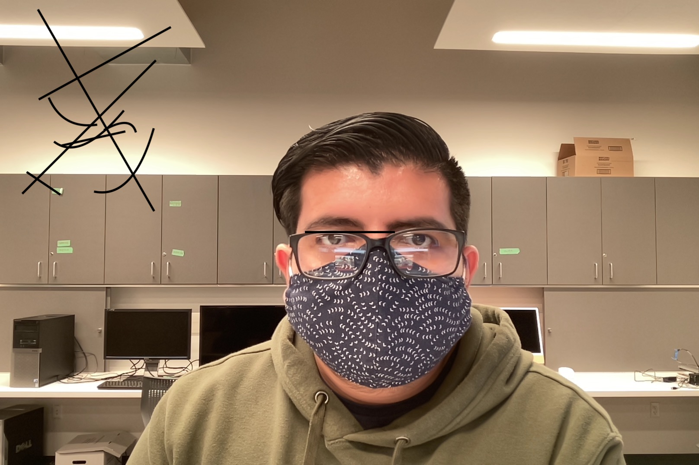

Cesar Martinez
My primary field of study at EWU is Computer Science. I have always been intrigued by technology and all the "magic" that is done to make things we take for granted everyday work. My favorite thing to do when I am not sitting in front of a computer screen is going on walks with my dog.